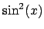
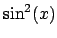

Next: 6.3 Example 3: Plotting Up: 6. Examples Previous: 6.1 Example 1: Plotting Contents Index
In this example, we use the multiplot environment to produce a gallery of
several plots. The set origin command is used to position each one. We
also make use of multiple  -axes in the top-left plot: the functions
-axes in the top-left plot: the functions
 and  are plotting together, but on different
and  are plotting together, but on different  scales.
The output is shown in figure 6.2.
scales.
The output is shown in figure 6.2.
PyXPlot Script:
examples/example2